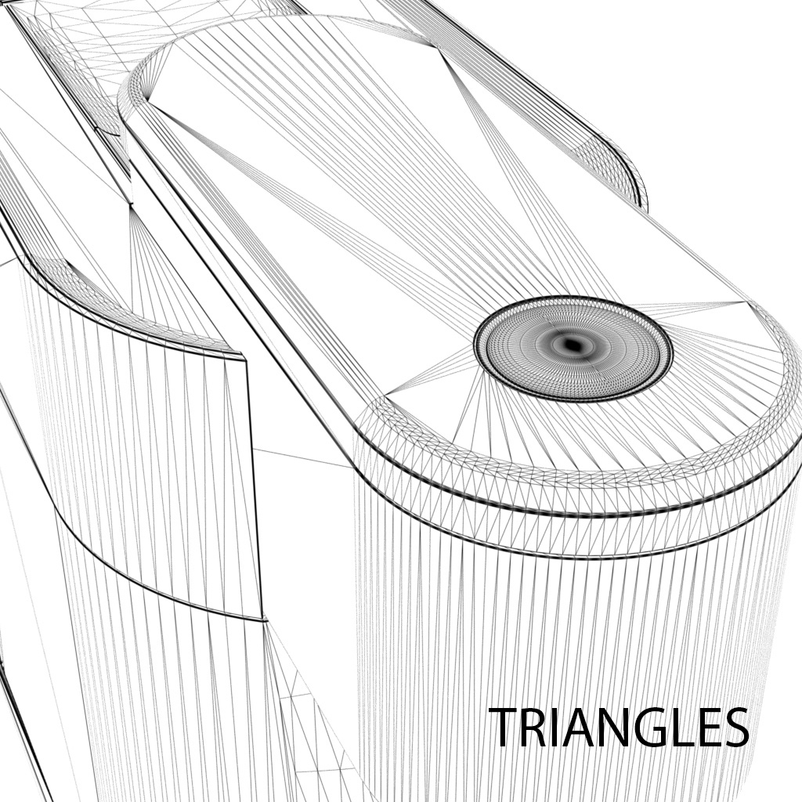
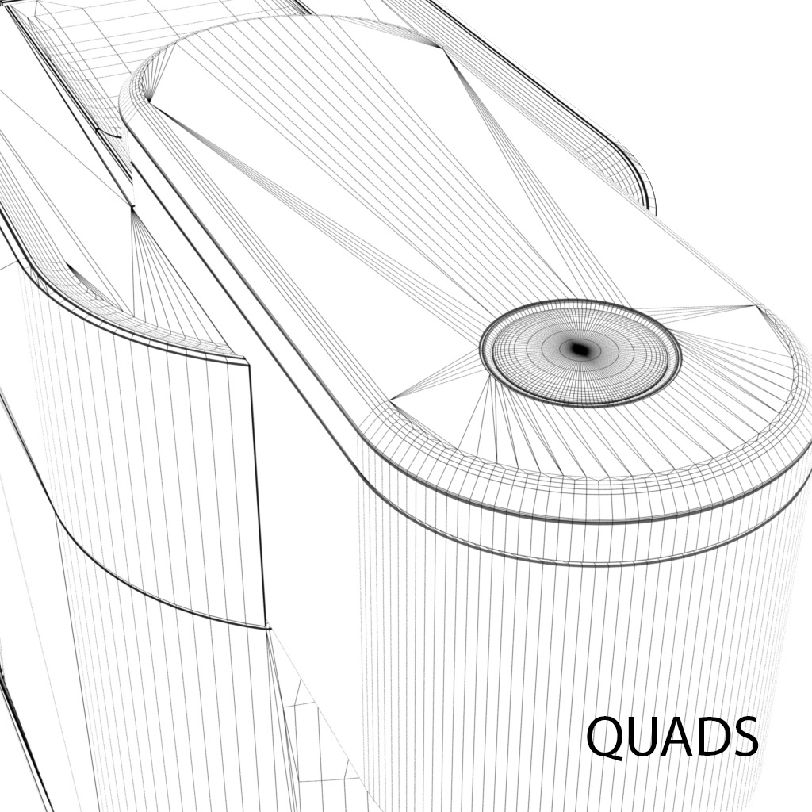
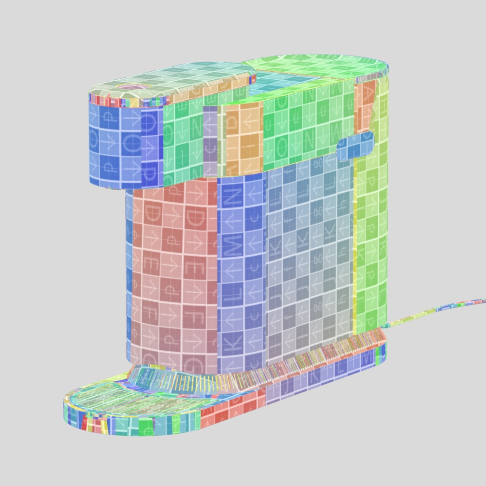
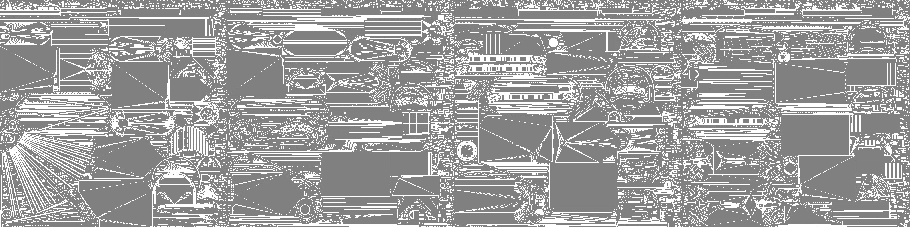
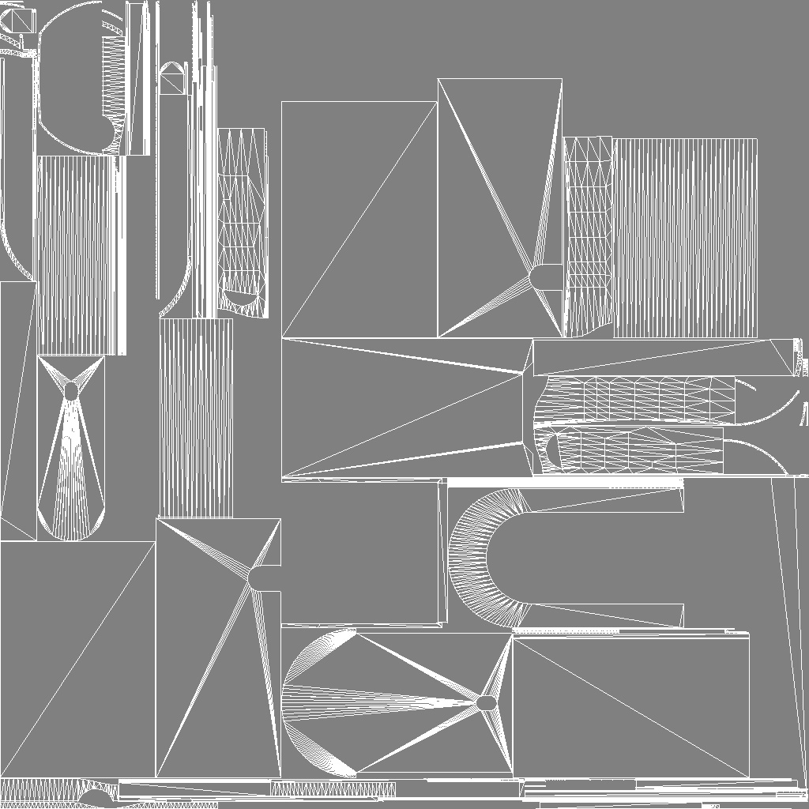

CAD & Mesh Processing
Introduction
The SSCA Mesh Processing module contains a list of operators that can be applied to a given target, such as a StageHandler or PrimHandler. Processing on a target will apply the operator on all meshes of the target subtree.
These operators can be chained in any order to build relevant and adapted processing workflow.
In industries involving 3D content, assets need to be prepared to fit pipeline requirements. With Operators like remeshing, decimation, mesh cleaning and even uv unwrap and repack SSCA provides the advantage to automate asset optimization.
Simple Example:
from pathlib import Path
from substance3d.api import scene, mesh_processing as mp
# Path to the 3D file
my_3d_file = Path("meshes/mesh_file.obj")
# Build a scene from the 3D file
scn = scene.load(my_3d_file)
# Build a processing workflow (operators are configured via attributes)
ops = [mp.DecimationOp(), mp.UnwrapOp()]
# Run the workflow on the whole scene
mp.process(scn, ops)
Note
Operators process the given prim and its sub-tree. Run it on a Stagehandler to process all meshes of the scene.
Mesh Processing works the same way on CAD and 3D files.
Let’s see, step by step, how to optimize CAD files such as .step files.
Build a production-ready Digital Twin from a CAD file
from substance3d.api import scene, export, primitive, mesh_processing
from pathlib import Path
# Path to the CAD file
my_cad_file = Path("cad_input/my_cad_file.step")
# Create a scene
my_scene = scene.new()
# Create a group to host the imported cad file
mesh_group = primitive.xform(my_scene, "mesh_grp")
# Import cad file and set the tessellation level at 'medium'.
scene.add_reference(mesh_group, my_cad_file, parametricTessellationLevel='medium')
Note
At this point, it is important to remember that, for CAD files import, the parametricTessellationLevel argument gives you the opportunity to set a tessellation level at import. parametricTessellationLevel string argument options are: “extraLow”, “low”, “medium”, “high”, “extraHigh”
Clean mesh and optimize it for further processing
Now we have our StageHandler scene lets load some of the cleaning operators:
# Make sure vertices of every mesh are welded
verts_weld_op = mesh_processing.RemoveDuplicateVerticesOp()
# Fix potential non-manifold edges and vertices
manifoldness_op = mesh_processing.ResolveNonmanifoldnessOp()
# Fill potential mesh holes
close_mesh_op = mesh_processing.CloseSmallHolesOp()
# Refine CloseSmallHolesOp attribute
close_mesh_op.max_hole_size = 10 # max hole's boundary vertices number to fill
Recover Quads from triangulated meshes
quad_op = mesh_processing.QuadRecoverOp()
quad_op.max_corner_angular_deviation_degrees = 60.0
quad_op.max_planarity_angular_deviation_degrees = 10.0
{kind=link}

{kind=link}

Unwrap mesh UVs
The Unwrap operator works with three Modes: Default, Fast and HardEdge.
All three modes perform well in most scenarios. The Default mode is generally better suited for organic meshes, the Fast mode prioritizes speed, and the HardEdge mode is optimized for hard-surface geometry.
# Set up Unwrap operator for HardEdge mode
unwrap_op = mesh_processing.UnwrapOp()
# Set Unwrap mode to HardEdge
unwrap_op.mode = mesh_processing.UnwrapOp.Mode.HardEdge
# Refine Packing attributes
unwrap_op.packing.padding_size = 0.002 # padding between islands in UV space
unwrap_op.packing.max_num_uv_tiles = 4 # maximum number of UV tiles to use when packing islands.
unwrap_op.packing.num_island_rotations = 1 # number of rotations to try when packing islands.
# Setting segmentation options:
unwrap_op.segmentation.max_cluster_confidence = 0.97
unwrap_op.segmentation.max_num_iterations = 7
unwrap_op.segmentation.max_num_outliers = 1
unwrap_op.segmentation.elongation_threshold = 1.0
unwrap_op.segmentation.chunks_elongation = 1.0
{kind=link}

{kind=link}

Note
Unwrap Operator automatically packs UV after Unwrap. You can refine packing results with the packing attributes of the Unwrap operator.
Compute mesh processing operators on the scene.
mesh_processing.process(my_scene, [verts_weld_op, manifoldness_op, close_mesh_op, quad_op, unwrap_op])
# Export the processed asset scene to a new file
export.fbx(my_scene, Path("mesh_output/processed_cad_file.fbx"))
Note
Each operator is executed one after the other, following the specified order.
Processing Mesh Attributes and Mesh/Subtree Values
SSCA provides access to mesh and scene hierarchy values, including mesh and/or UV surface areas and edge length metrics.
These operators are divided into two categories:
Indexed mesh attribute: Operates on each mesh, storing their relative processed values into their mesh attributes.
Global mesh/subtree values: Operates on either an entire scene, a subtree, or a single mesh, returning their processed mesh values as a dictionary.
# Load a 1cm cube mesh
cube_file = Path("./meshes/cube.obj")
main_scene = scene.new()
mesh_group = primitive.xform(main_scene, "mesh_grp")
scene.add_reference(mesh_group, cube_file)
# Load values & attributes operators
uv_area_op = mesh_processing.ComputeUVAreaOp() # Global mesh/subtree value
mesh_area_op = mesh_processing.ComputeMeshAreaOp() # Global mesh/subtree value
edge_lengths_op = mesh_processing.ComputeEdgeLengthsOp() # Indexed mesh attribute
# Process the scene with the operators and store mesh group subtree global values as dictionary
processing_result = mesh_processing.process(mesh_group, [uv_area_op, mesh_area_op, edge_lengths_op])
# Print mesh_group's values using the operator class's names as keys
print(processing_result.get("ComputeUVAreaOp"))
# >> 0.375
print(processing_result.get("ComputeMeshAreaOp"))
# >> 6.0
# Get and print mesh's edge lengths attributes.
cube_mesh = mesh_group.search(type='mesh')[0]
edge_lengths = cube_mesh.primvars.edgeLengths.get() # cube_mesh.<attribute_full_name>.get()
print(edge_lengths)
# >> [1, 1, 1, 1, 1, 1, 1, 1, 1, 1, 1, 1]
Note
After mesh is processed, its “primvars.edgeLengths” attribute can be found using: cube_mesh.inspect(display_values=True)
It will be printed among information like other attributes, metadata, etc. like this:
.primvars.edgeLengths : [1, 1, 1, 1, 1, 1, 1, 1, 1, 1, 1, 1]
primvars.edgeLengths being the full name of the mesh attribute created by the ComputeEdgeLengthsOp operator.
Best Practices
Chain cleanup operators (duplicates / degenerates / short edges) before algorithms sensitive to topology (
decimation,remeshing,subdivision).Keep UV management steps (
UnwrapOporRepackOp) after topology edits to avoid invalidating UVs unnecessarily.Start with default attributes values, verify results with your renderer or mesh review and then edit operators attributes value as needed.
CAD Files Import Options
SSCA scene.add_reference() & scene.load() modules allow you to respectively import or create scene from a CAD files.
Through these modules, you can set arguments like:
Tessellation level
Tessellation algorithms
Tessellation quality checks & fixes.
CAD import example using scene.load() module:
from pathlib import Path
from substance3d.api import scene
# Path to the CAD file
my_cad_file = Path("/cad_file.iges")
# Build a scene from tessellated CAD file
scn = scene.load(my_cad_file,
parametricTessellationLevel="medium", # Set tessellation level at import.
generalRunMeshCleanup=True, # Set post cleanup operations after import.
generalReadHiddenObjects=True, # Read hidden objects from the CAD file as well.
generalRunUvCorrection=True # Run UV correction, repack UVs into 0-1 space.
)
parametricTessellationLevel
"ExtraLow", "Low", "Medium", "High", "ExtraHigh").Type:
stringDefault:
"medium"


prcHoopsAccurateTessellation
Type:
booleanDefault:
False
prcHoopsAccurateTessellationWithGrid
Type:
booleanDefault:
False
prcHoopsAccurateTessellationWithGridMaximumStitchLength
Type:
floatDefault:
0.0
prcHoopsAccurateSurfaceCurvatures
Type:
booleanDefault:
False
generalRunMeshCleanup
Type:
booleanDefault:
False
generalRunUvCorrection
Type:
booleanDefault:
True
{kind=link}

parametricMaximalTriangleEdgeLength
0.0.Type:
floatDefault:
0.0
parametricAutomaticallyRetryTessellationOnFailure
"prc..." options.Type:
booleanDefault:
True
parametricPreferGridStyleTessellation
Type:
booleanDefault:
True
prcHoopsUseHeightInsteadOfRatio
Type:
booleanDefault:
False
parametricAngleToleranceDeg
Type:
floatDefault:
0.0
parametricMaxChordHeight
Type:
floatDefault:
0.0
parametricChordHeightRatio
Type:
floatDefault:
0.0